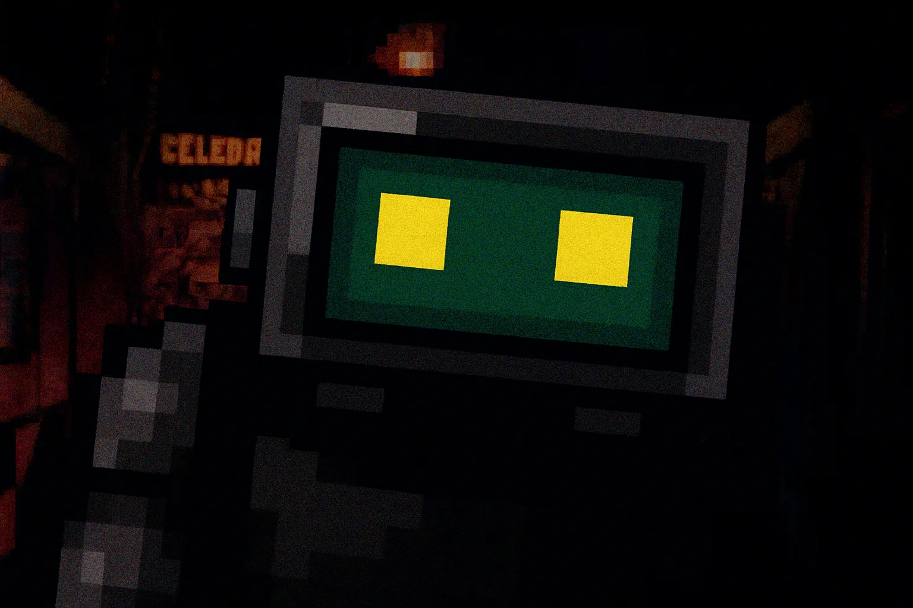
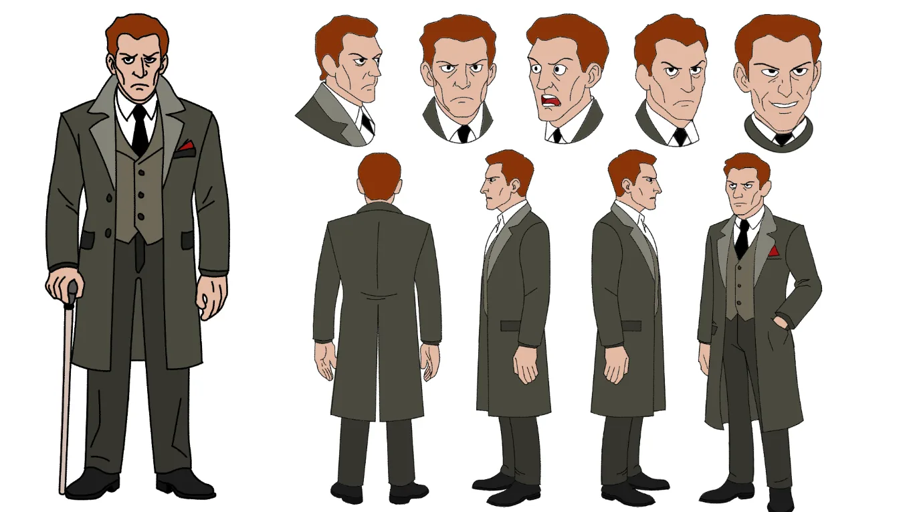
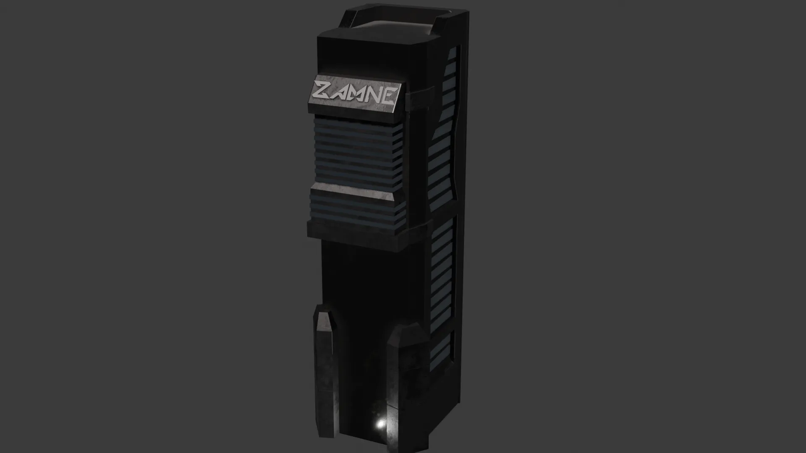
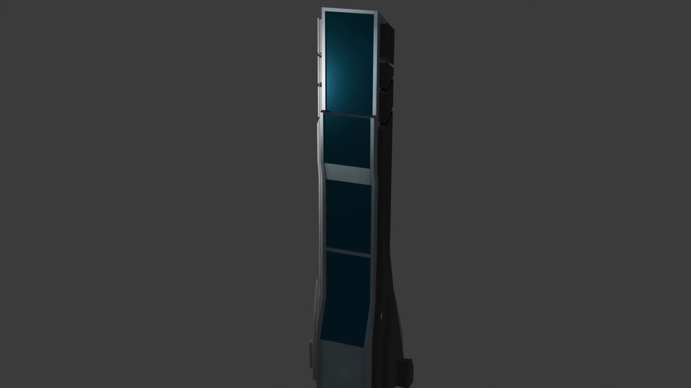
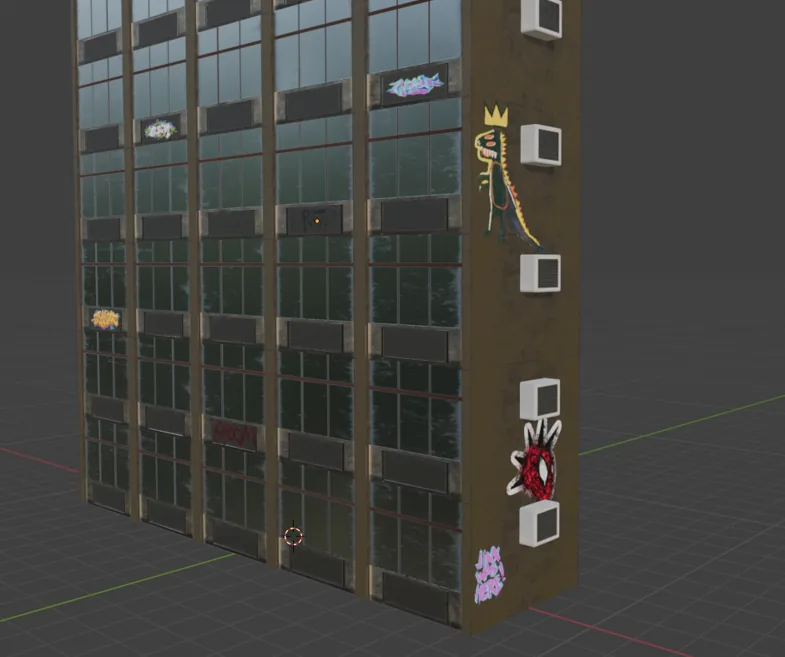
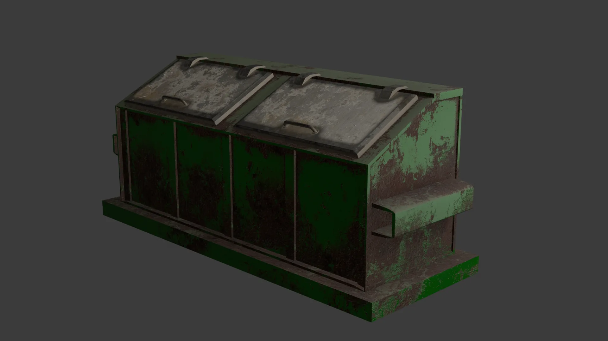
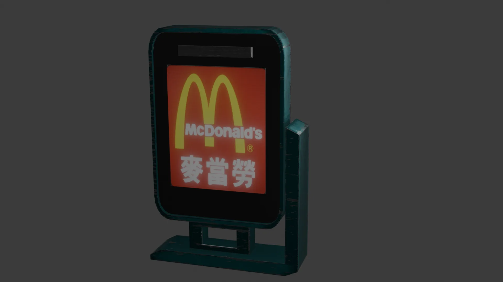
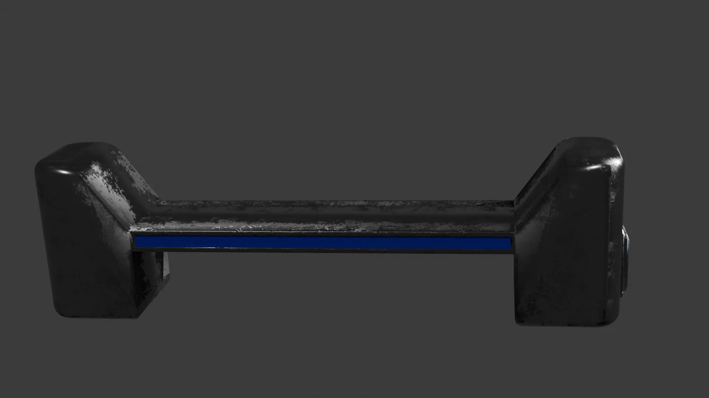
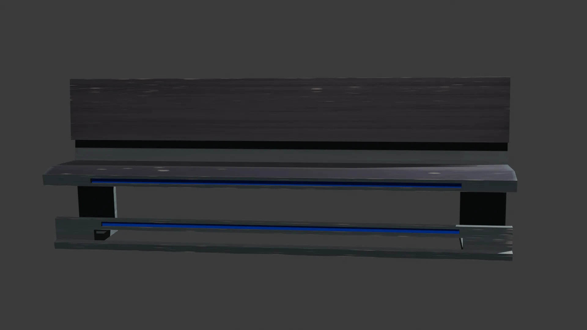
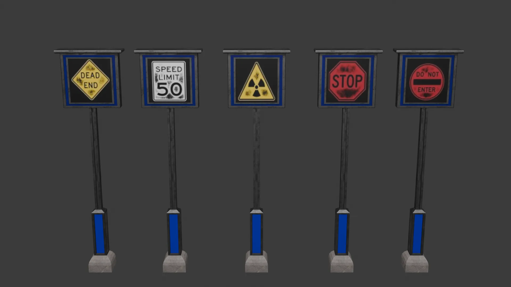

A custom pixel-art elimination frame created for Sussy Employees. Designed to convey sudden atmospheric dread, this dynamic jumpscare sequence zooms in on the rogue TV-headed character's glowing, unblinking screen as it corner-traps unsuspecting coworkers in dark office corridors. Features custom retro dithering, high-contrast voxel texturing, and expressive low-poly character geometry.


Complete 2D animation character sheet for "The Boss," the central antagonist designed for a 2D animation project. Features a full 360-degree turnaround model breakdown paired with expressive facial emotion keyframes to ensure production consistency across animation pipelines. Designed with sharp, imposing geometry, deliberate linework, and a tailored 1940s-inspired trench coat silhouette that highlights his cold, calculated, and intimidating authority.
Official 2D animation character model sheet for "Bob," the central protagonist of a 2D animated project. Features a complete 360-degree orthographic turnaround paired with dynamic facial expression studies and keyframe pose breakdowns. Designed with vibrant crimson hair, wire-frame glasses, subtle fangs, and plain attire to emphasize his awkward, unassuming silhouette—creating a stark visual contrast against the blood-stained meat cleaver he wields.


Modular 3D skyscraper model designed for real-time cyberpunk city scenes. Built with clean geometric forms, metallic vent detailing, and custom corporate branding to quickly assemble dense, futuristic urban horizons.
Stylized 3D skyscraper model with a sleek, futuristic design. Features a vertical composition with multiple levels, each with unique architectural elements and lighting effects to create a sense of depth and scale in cyberpunk cityscapes.


High-rise 3D apartment building asset created for a cyberpunk urban environment. Built with modular snapping in mind and detailed with reflective windows, AC props, and urban graffiti decals to add depth and narrative environmental detail to street-level scenes.
Low-poly 3D environmental prop modeled for a cyberpunk city class project. Textured with PBR material maps featuring heavy surface corrosion, rusted industrial green paint, grease stains, and subtle edge wear. Optimized for real-time game engines with an efficient polygon count, perfect for populating atmospheric alleyways, backstreets, and futuristic slum environments.


Low-poly 3D street advertisement kiosk modeled for a cyberpunk city scene. Features an illuminated, glowing display sign showcasing localized corporate branding paired with metallic teal casing, subtle paint scuffs, and edge wear. Designed as a freestanding street-level prop to provide dynamic point-source lighting and ambient atmosphere along urban sidewalks.
Low-poly 3D street bench modeled as an environmental prop for a cyberpunk urban setting. Features heavy dark metallic casing, worn edge textures, sturdy side supports, and a distinct neon blue accent trim inset along the seating frame. Designed for populating sidewalks, public plazas, and transit stations to enhance environmental depth.


A low-poly 3D urban seating asset designed for cyberpunk streetscapes and transit hubs. Constructed with dark wooden/composite slatted backing, a metallic structural frame, and dual neon blue light strips running along the seat edge and footrest bar. Built as a versatile environmental prop to fill out public plazas, walkways, and bus stop shelters.
Futuristic street signage collection designed to guide and restrict flow across high-tech city sectors. Each freestanding sign combines heavy industrial metal posts with glowing digital display faces showing weathered hazard warnings and traffic commands, adding functional world-building detail to sci-fi streetscapes.


A stylized low-poly 3D crate/chest prop designed for real-time game environments. Features clean blocky geometry, matte khaki plating, side handles, and a central dark latching mechanism. Built with an optimized poly count, perfect as an interactive loot container, supply drop, or storage clutter for low-poly action and adventure games.
A stylized low-poly 3D wooden barrel environmental prop modeled for real-time game scenes. Features faceted wooden staves in rich brown tones bound by dual dark iron hoops. Optimized with a lightweight polygon footprint, making it an ideal destructible object, resource container, or ambient clutter asset for stylized fantasy, pirate, or medieval environments.